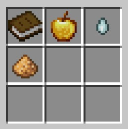
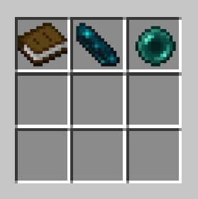
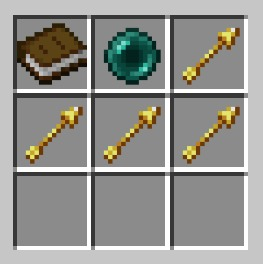
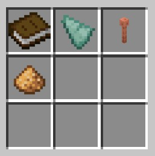
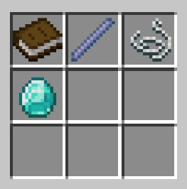
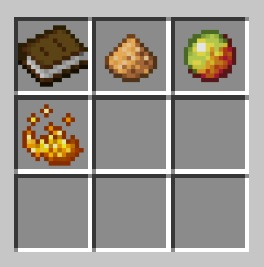
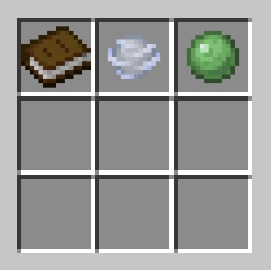
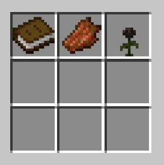
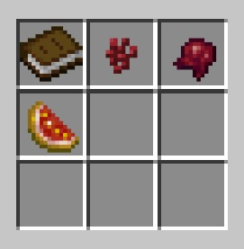
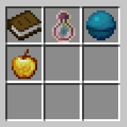

Pinging server...
Players: 0/0
Click to copy to clipboard
Java:
Bedrock: Port:
Next check in: 0.00
Max level: V

Max level: I

Max level: III

Max level: IV

Max level: II

Max level: III

Max level: III

Max level: III

Max level: IV

Max level: II
